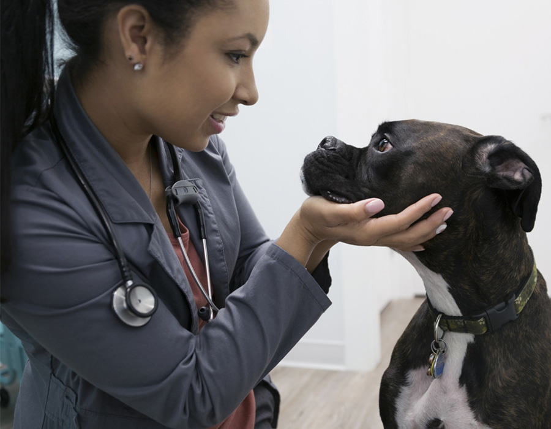
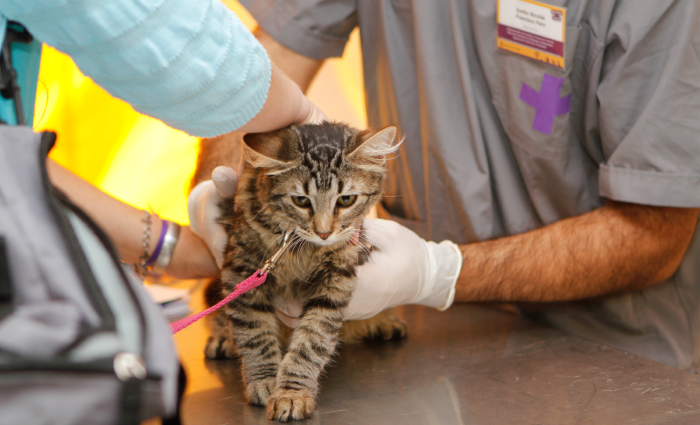
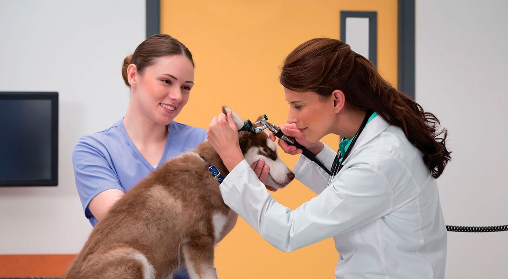

Medicina Veterinaria de alta complejidad
Instalaciones y equipamiento de vanguardia para diagnóstico y tratamiento
Clinica Veterinaria Patitas
Somos un equipo de profesionales dedicados a brindarle a ese integrante especial de la familia, atención médica del más alto nivel. Contamos con instalaciones y equipamiento de vanguardia para diagnóstico y tratamiento.
Nuestra misión es tratar en forma personalizada a cada paciente brindando los mejores recursos médicos y tecnológicos.




